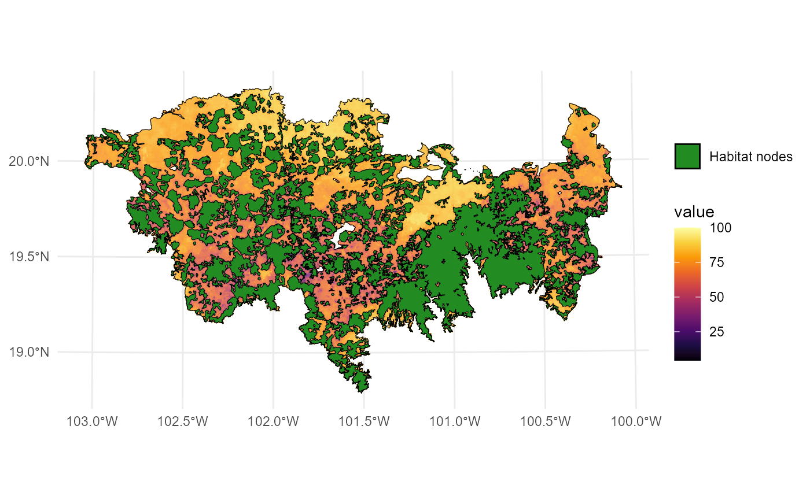
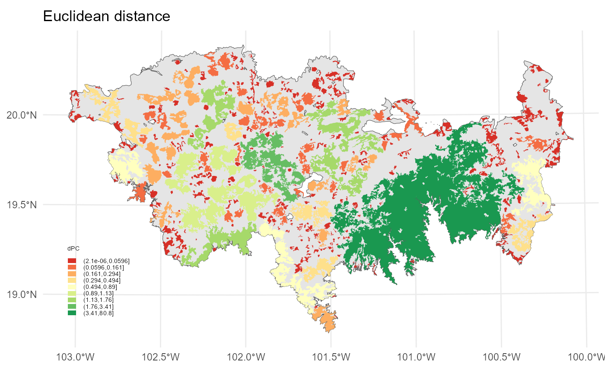
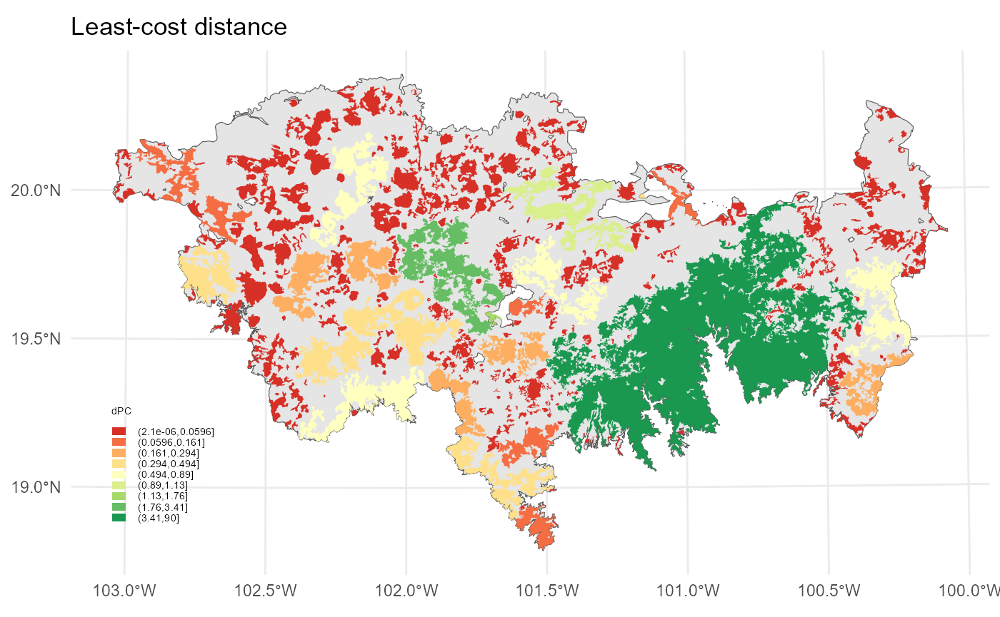

In this example, the MK_dPCIIC() function was applied to
estimate the connectivity of 404 remnant habitat patches, which were
modeled to 40 non-volant mammal species of the Trans-Mexican Volcanic
System (TMVS) by Correa Ayram et al., (2017). The landscape resistance
to dispersal was estimated at a 100-meter resolution using a spatial
human footprint index, land use intensity, time of human landscape
intervention, biophysical vulnerability, fragmentation, and habitat loss
(Correa Ayram et al., 2017). The raster was aggregated by a factor of 5
to change its original resolution from 100m to 500m. To represent
different dispersal capacities of multiple species we considered the
following median (associated to a probability of 0.5) distance
thresholds: 250, 1500, 3000, and 10,000 meters. These four distances
group the 40 species according to their dispersal distance
requirements
## [1] 404
#Study area
data("TMVS", package = "Makurhini")
#Resistance
data("resistance_matrix", package = "Makurhini")
raster_map <- as(resistance_matrix, "SpatialPixelsDataFrame")
raster_map <- as.data.frame(raster_map)
colnames(raster_map) <- c("value", "x", "y")
ggplot() +
geom_tile(data = raster_map, aes(x = x, y = y, fill = value), alpha = 0.8) +
geom_sf(data = TMVS, aes(color = "Study area"), fill = NA, color = "black") +
geom_sf(data = habitat_nodes, aes(color = "Habitat nodes"), fill = "forestgreen") +
scale_fill_gradientn(colors = c("#000004FF", "#1B0C42FF", "#4B0C6BFF", "#781C6DFF",
"#A52C60FF", "#CF4446FF", "#ED6925FF", "#FB9A06FF",
"#F7D03CFF", "#FCFFA4FF"))+
scale_color_manual(name = "", values = "black")+
theme_minimal() +
theme(axis.title.x = element_blank(),
axis.title.y = element_blank())
One of the most crucial parameters of the Makurhini functions is
distance, which is a list of parameters associated with the
distancefile() function. This function is used to establish
the distance between each pair of nodes. The distances between nodes can
be classified as either Euclidean distances (also known as straight-line
distances) or effective distances (also known as cost distances). In the
case of Euclidean distances, two of the most crucial parameters in the
list are type and keep. The type parameter is
employed to select one of the distances, namely "centroid"
(which is faster) or "edge". Meanwhile, keep
is utilized to streamline the shapes of the polygons representing the
nodes. Furthermore, additional simplification of the shape (through
vertex removal) can significantly accelerate the processing time,
particularly in the case of the "edge" type.
In this example we will use centroid distance:
PC_example_1 <- MK_dPCIIC(nodes = habitat_nodes,
attribute = NULL,
distance = list(type = "centroid"),
parallel = NULL,
metric = "PC",
probability = 0.5,
distance_thresholds = c(250, 1500, 3000, 10000))We obtain a list object where each element is a result
for each distance threshold.
class(PC_example_1)## [1] "list"
names(PC_example_1)## [1] "d250" "d1500" "d3000" "d10000"
head(PC_example_1$d10000)## Simple feature collection with 6 features and 6 fields
## Geometry type: POLYGON
## Dimension: XY
## Bounding box: xmin: 40856.86 ymin: 2025032 xmax: 80825.67 ymax: 2066668
## Projected CRS: NAD_1927_Albers
## Id core_id dPC dPCintra dPCflux dPCconnector
## 1 0 1 0.0016596 0.0000034 0.0016561 0.000000e+00
## 2 0 2 0.0052718 0.0000227 0.0052491 1.366615e-14
## 3 0 3 0.1965547 0.0568531 0.1397016 0.000000e+00
## 4 0 4 0.0038574 0.0000069 0.0038505 5.905000e-15
## 5 0 5 0.0044296 0.0000160 0.0044136 5.463510e-15
## 6 0 6 0.0007537 0.0000003 0.0007534 1.147986e-14
## geometry
## 1 POLYGON ((54911.05 2035815,...
## 2 POLYGON ((44591.28 2042209,...
## 3 POLYGON ((46491.11 2042467,...
## 4 POLYGON ((54944.49 2048163,...
## 5 POLYGON ((80094.28 2064140,...
## 6 POLYGON ((69205.24 2066394,...We can use ggplot2 or tmap to map the results:
#We can use some package to get intervals for example classInt R Packge:
library(classInt)
interv <- classIntervals(PC_example_1$d10000$dPC, 9, "jenks")[[2]] #9 intervalos
ggplot()+
geom_sf(data = TMVS)+
geom_sf(data = PC_example_1$d10000, aes(fill = cut(dPC, breaks = interv)), color = NA)+
scale_fill_brewer(type = "qual",
palette = "RdYlGn",
name = "dPC",
na.translate = FALSE)+
theme_minimal() +
theme(
legend.position = "inside",
legend.position.inside = c(0.1,0.21),
legend.key.height = unit(0.2, "cm"),
legend.key.width = unit(0.3, "cm"),
legend.text = element_text(size = 5.5),
legend.title = element_text(size = 5.5)
) + labs(title="Euclidean distance")
The landscape resistance to dispersal was estimated at a 100-meter resolution using a spatial human footprint index, land use intensity, time of human landscape intervention, biophysical vulnerability, fragmentation, and habitat loss (Correa Ayram et al., 2017). The raster was aggregated by a factor of 5 to change its original resolution from 100m to 500m.
PC_example_2 <- MK_dPCIIC(nodes = habitat_nodes,
attribute = NULL,
distance = list(type = "least-cost",
resistance = resistance_matrix),
parallel = NULL,
metric = "PC",
probability = 0.5,
distance_thresholds = c(250, 1500, 3000, 10000))We obtain a list object where each element is a result
for each distance threshold.
class(PC_example_2)## [1] "list"
names(PC_example_2)## [1] "d250" "d1500" "d3000" "d10000"
head(PC_example_2$d10000)## Simple feature collection with 6 features and 6 fields
## Geometry type: POLYGON
## Dimension: XY
## Bounding box: xmin: 40856.86 ymin: 2025032 xmax: 80825.67 ymax: 2066668
## Projected CRS: NAD_1927_Albers
## Id core_id dPC dPCintra dPCflux dPCconnector
## 1 0 1 0.0000236 0.0000039 0.0000196 0
## 2 0 2 0.0001155 0.0000259 0.0000896 0
## 3 0 3 0.0674997 0.0648563 0.0026434 0
## 4 0 4 0.0000722 0.0000078 0.0000644 0
## 5 0 5 0.0001142 0.0000182 0.0000959 0
## 6 0 6 0.0000277 0.0000004 0.0000273 0
## geometry
## 1 POLYGON ((54911.05 2035815,...
## 2 POLYGON ((44591.28 2042209,...
## 3 POLYGON ((46491.11 2042467,...
## 4 POLYGON ((54944.49 2048163,...
## 5 POLYGON ((80094.28 2064140,...
## 6 POLYGON ((69205.24 2066394,...Each element of the list is a vector type object that can be exported using the sf functions and in its vector formats (e.g., shp, gpkg) using the sf package (Pebesma et al., 2024), for example:
We can use ggplot2 or tmap to map the results:
#Keep the same range of values of PC_example_1 for comparison, only the highest range changes.
interv[length(interv)] <- max(PC_example_2$d10000$dPC)
ggplot()+
geom_sf(data = TMVS)+
geom_sf(data = PC_example_2$d10000, aes(fill = cut(dPC, breaks = interv)), color = NA)+
scale_fill_brewer(type = "qual",
palette = "RdYlGn",
name = "dPC",
na.translate = FALSE)+
theme_minimal() +
theme(
legend.position = "inside",
legend.position.inside = c(0.1, 0.21),
legend.key.height = unit(0.2, "cm"),
legend.key.width = unit(0.3, "cm"),
legend.text = element_text(size = 5.5),
legend.title = element_text(size = 5.5)
)+ labs(title="Least-cost distance")
In the event that the values of the resistance raster are integers,
it is possible to estimate the cost distances between patches by
utilizing the Java options that Makurhini integrates with the R package
graph4lg (Savary et al., 2023). It is therefore possible to add the
options least_cost.java and cores.java to the
input list within the distance parameter. The first of these activates
the Java mode, while the second specifies the number of cores to be used
for parallelising the process (the default value is 1):
PC_example <- MK_dPCIIC(nodes = patches, attribute = NULL, area_unit = "ha",
distance = list(type = "least-cost",
resistance = resistance_matrix,
least_cost.java = TRUE,
cores.java = 4),
metric = "PC", overall = TRUE, probability = 0.5,
distance_thresholds = c(250, 1500, 3000, 10000),
intern = FALSE)
#155.59 sec elapsedTo obtain the overall connectivity value for the study region we can
use the parameter overall. At this point it is important to
use the parameter unit_area to set the area units we will
work with, which will be used to interpret the metric EC, also called
ECA, the default is "m2". For example, get overall and work
with hectares:
PC_example_3 <- MK_dPCIIC(nodes = habitat_nodes,
attribute = NULL,
area_unit = "ha",
distance = list(type = "centroid"),
parallel = NULL,
metric = "PC",
probability = 0.5,
distance_thresholds = c(250, 1500, 3000, 10000),
overall = TRUE)
class(PC_example_3)## [1] "list"
class(PC_example_3$d10000$node_importances_d10000)## [1] "sf" "data.frame"
class(PC_example_3$d10000$overall_d10000)## [1] "data.frame"
PC_example_3$d10000$overall_d10000## Index Value
## 1 PCnum 2.135845e+11
## 2 EC(PC) 4.621521e+05
## 3 PCintra(%) 8.606978e+01
## 4 PCdirect(%) 1.310029e+01
## 5 PCstep(%) 8.299300e-01Nodes importance prioritization:
PC_example_3$d10000$node_importances_d10000## Simple feature collection with 404 features and 5 fields
## Geometry type: POLYGON
## Dimension: XY
## Bounding box: xmin: -108954 ymin: 2025032 xmax: 202330.2 ymax: 2198936
## Projected CRS: NAD_1927_Albers
## First 10 features:
## Id dPC dPCintra dPCflux dPCconnector geometry
## 1 1 0.0016587 0.0000034 0.0016553 5.102300e-16 POLYGON ((54911.05 2035815,...
## 2 2 0.0061692 0.0000227 0.0052477 8.987064e-04 POLYGON ((44591.28 2042209,...
## 3 3 0.1964884 0.0568579 0.1396305 2.747800e-15 POLYGON ((46491.11 2042467,...
## 4 4 0.0038583 0.0000069 0.0038510 4.289210e-07 POLYGON ((54944.49 2048163,...
## 5 5 0.0044289 0.0000160 0.0044129 3.158060e-15 POLYGON ((80094.28 2064140,...
## 6 6 0.0007536 0.0000003 0.0007532 0.000000e+00 POLYGON ((69205.24 2066394,...
## 7 7 0.0012421 0.0000009 0.0012412 1.645555e-08 POLYGON ((68554.2 2066632, ...
## 8 8 0.0016415 0.0000016 0.0016400 0.000000e+00 POLYGON ((69995.53 2066880,...
## 9 9 0.0055872 0.0000194 0.0055677 1.515382e-07 POLYGON ((79368.68 2067324,...
## 10 10 0.8898083 0.4058061 0.4840021 2.007755e-08 POLYGON ((23378.32 2067554,...Overall:
PC_example_3$d10000$overall_d10000## Index Value
## 1 PCnum 2.135845e+11
## 2 EC(PC) 4.621521e+05
## 3 PCintra(%) 8.606978e+01
## 4 PCdirect(%) 1.310029e+01
## 5 PCstep(%) 8.299300e-01You can also use the onlyoverall parameter to obtain
only the global connectivity value without prioritizing the nodes. If
the LA parameter is not included while
using overall or onlyoverall parameter, then
the PC or IIC indices are not obtained.
#Maximum landcape attribute or LA = total area of the estudy area
Area <- unit_convert( st_area(TMVS), "m2", "ha") #hectares
PC_example_3 <- MK_dPCIIC(nodes = habitat_nodes,
attribute = NULL,
area_unit = "ha",
distance = list(type = "centroid"),
parallel = NULL,
metric = "PC",
probability = 0.5,
distance_thresholds = c(250, 1500, 3000, 10000),
LA = Area,
onlyoverall = TRUE)
class(PC_example_3)## [1] "list"
class(PC_example_3$d10000)## [1] "data.frame"
PC_example_3$d10000## Index Value
## 1 PCnum 2.135845e+11
## 2 EC(PC) 4.621521e+05
## 3 PC 2.801041e-02
## 4 PCintra(%) 8.606978e+01
## 5 PCdirect(%) 1.310029e+01
## 6 PCstep(%) 8.299300e-01To estimate the IIC index we only need to specify it in the
metric parameter, as it is a binary index it is not
necessary to specify the connection probability.
IIC_example_4 <- MK_dPCIIC(nodes = habitat_nodes,
attribute = NULL,
area_unit = "ha",
distance = list(type = "centroid"),
parallel = NULL,
metric = "IIC",
probability = NULL,
distance_thresholds = c(250, 1500, 3000, 10000),
LA = Area,
overall = TRUE)
class(IIC_example_4)## [1] "list"
class(IIC_example_4$d10000$node_importances_d10000)## [1] "sf" "data.frame"
class(IIC_example_4$d10000$overall_d10000)## [1] "data.frame"Nodes importance prioritization:
IIC_example_4$d10000$node_importances_d10000## Simple feature collection with 404 features and 5 fields
## Geometry type: POLYGON
## Dimension: XY
## Bounding box: xmin: -108954 ymin: 2025032 xmax: 202330.2 ymax: 2198936
## Projected CRS: NAD_1927_Albers
## First 10 features:
## Id dIIC dIICintra dIICflux dIICconnector
## 1 1 0.0005096 0.0000036 0.0004694 3.662810e-05
## 2 2 0.0012550 0.0000237 0.0011946 3.661800e-05
## 3 3 0.0611657 0.0594712 0.0016525 4.197737e-05
## 4 4 0.0017883 0.0000072 0.0017446 3.662559e-05
## 5 5 0.0051043 0.0000167 0.0050510 3.662560e-05
## 6 6 0.0008232 0.0000003 0.0007862 3.663328e-05
## 7 7 0.0013356 0.0000009 0.0012981 3.663245e-05
## 8 8 0.0017571 0.0000016 0.0017189 3.663177e-05
## 9 9 0.0056226 0.0000203 0.0055657 3.662469e-05
## 10 10 0.4262390 0.4244579 0.0017467 3.445311e-05
## geometry
## 1 POLYGON ((54911.05 2035815,...
## 2 POLYGON ((44591.28 2042209,...
## 3 POLYGON ((46491.11 2042467,...
## 4 POLYGON ((54944.49 2048163,...
## 5 POLYGON ((80094.28 2064140,...
## 6 POLYGON ((69205.24 2066394,...
## 7 POLYGON ((68554.2 2066632, ...
## 8 POLYGON ((69995.53 2066880,...
## 9 POLYGON ((79368.68 2067324,...
## 10 POLYGON ((23378.32 2067554,...Overall:
IIC_example_4$d10000$overall_d10000## Index Value
## 1 IICnum 2.041991e+11
## 2 EC(IIC) 4.518840e+05
## 3 IIC 2.677957e-02
## 4 IICintra(%) 9.002574e+01
## 5 IICdirect(%) 5.828033e-01
## 6 IICstep(%) 9.391453e+00Correa Ayram, C. A., Mendoza, M. E., Etter, A., & Pérez Salicrup, D. R. (2017). Anthropogenic impact on habitat connectivity: A multidimensional human footprint index evaluated in a highly biodiverse landscape of Mexico. Ecological Indicators, 72, 895-909. https://doi.org/10.1016/j.ecolind.2016.09.007
Pascual-Hortal, L. & Saura, S. 2006. Comparison and development of new graph-based landscape connectivity indices: towards the priorization of habitat patches and corridors for conservation. Landscape Ecology 21 (7): 959-967.
Saura, S. & Pascual-Hortal, L. 2007. A new habitat availability index to integrate connectivity in landscape conservation planning: comparison with existing indices and application to a case study. Landscape and Urban Planning 83 (2-3): 91-103.
Savary, P., Vuidel, G., Rudolph, T., & Daniel, A. (2023). graph4lg: Build Graphs for Landscape Genetics Analysis (1.8.0) [Software]. https://cran.r-project.org/web/packages/graph4lg/index.html